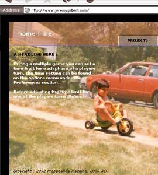

| VERSION 9.1 | NEXT Troubled with my struggles producing Version 9.0, I finally found my inspiration on a rainy day spent with my mother going through old photos. The result was a look and feel resembling the colors and images of my early childhood. The navigation and the palette were meant to evoke the simplicity of Legos or picture books. The splash page featured rich, blended colors seen in old photos and used "captions" to explain the site's purpose. |  |
|
| VERSION 9.1 : 7.00 | BACK/NEXT | ||